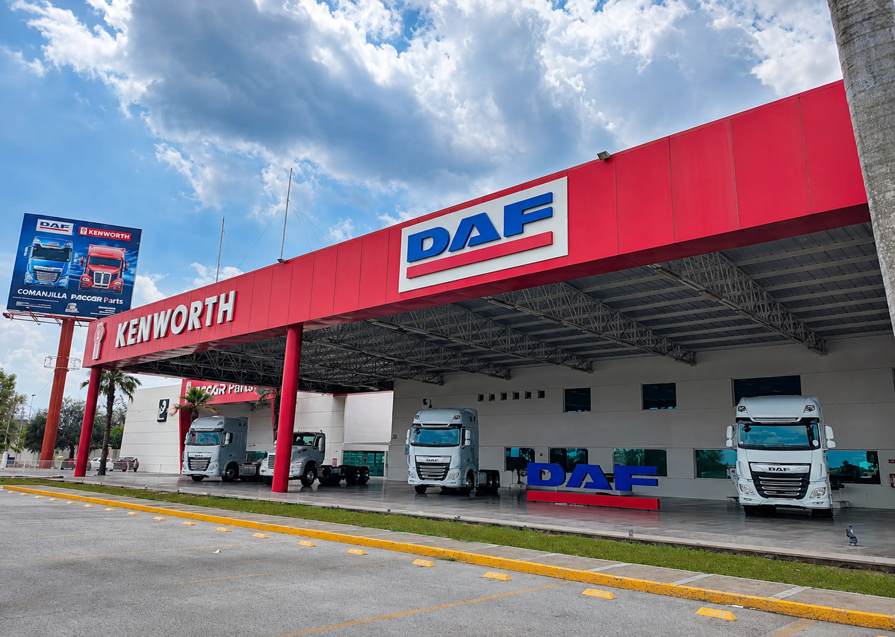
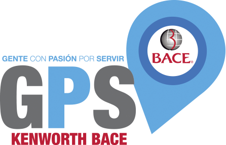
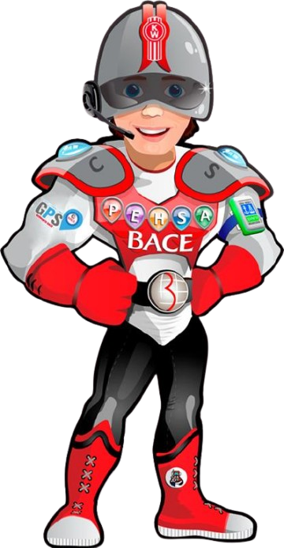

UN CAMINO LARGO · 03

GRUPO BACE
Somos KENWORTH DAF BACE, una compañía dedicada a contribuir a la
eliminación del desempleo, el hambre y la pobreza de nuestro México,
mediante la comercialización de unidades de carga, refacciones y
servicio postventa.
Con más de 100 años de trayectoria en el
mercado, nos hemos destacado por nuestra dedicación a la excelencia y
nuestro compromiso con la satisfacción de nuestros clientes. Nuestro
equipo altamente capacitado y comprometido trabaja incansablemente
para ofrecer soluciones innovadoras y de alta calidad que satisfagan
las necesidades de nuestros clientes.
CULTURA BACE

Ser una compañía que transforme el mundo que toca y deje un legado de bienestar y prosperidad en todas las personas con las que interactúe. Contribuir a eliminar el desempleo, el hambre y la pobreza de nuestro México, mediante la comercialización de Unidades de Carga, Refacciones y Servicio Postventa. Seremos las mejores concesionarias del mundo y nos reinventaremos constantemente, ofreciendo una gama de servicios cargados de un profundo sentido social.

NUESTRO SUPERHÉROEBACER representa a cada colaborador que vive GPS todos los días: saluda, escucha, cumple, crea soluciones, ayuda a su equipo, aprende y cuida los recursos. Su verdadero poder es servir con pasión y convertir cada interacción en una historia de éxito.

En Kenworth DAF BACE utilizamos inteligencia artificial y tecnologías modernas para mejorar procesos internos, facilitar el trabajo de nuestros equipos y brindar una atención más ágil y satisfactoria a nuestros clientes.